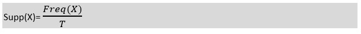

- 1. Apriori
- 2. Eclat
- 3. F-P Growth Algorithm
Association Rule Learning work
Association rule learning works on the concept of If and Else Statement, such as if A then B.Here the If element is called antecedent, and then statement is called as Consequent. These types of relationships where we can find out some association or relation between two items is known as single cardinality. It is all about creating rules, and if the number of items increases, then cardinality also increases accordingly. So, to measure the associations between thousands of data items, there are several metrics. These metrics are given below:- o Support
- o Confidence
- o Lift
Support
Support is the frequency of A or how frequently an item appears in the dataset. It is defined as the fraction of the transaction T that contains the itemset X. If there are X datasets, then for transactions T, it can be written as: Confidence
Confidence indicates how often the rule has been found to be true. Or how often the items X and Y occur together in the dataset when the occurrence of X is already given. It is the ratio of the transaction that contains X and Y to the number of records that contain X.Lift
It is the strength of any rule, which can be defined as below formula: It is the ratio of the observed support measure and expected support if X and Y are independent of each other. It has three possible values:- o If Lift= 1: The probability of occurrence of antecedent and consequent is independent of each other.
- o Lift>1: It determines the degree to which the two itemsets are dependent to each other.
- o Lift<1: It tells us that one item is a substitute for other items, which means one item has a negative effect on another.
Apriori Algorithm
Data Set – Market_Basket optimisation.csv from kaggle This algorithm uses frequent datasets to generate association rules. It is designed to work on the databases that contain transactions. This algorithm uses a breadth-first search and Hash Tree to calculate the itemset efficiently. It is mainly used for market basket analysis and helps to understand the products that can be bought together. It can also be used in the healthcare field to find drug reactions for patients.- 1. Scan the transaction data base to get the support of S each 1- itemset, compare S with min_sup, and get a support of 1-itemsets, L1.
- 2. Use Lk-1 join Lk-1 to generate a set of candidate k-itemsets and use Apriori property to prune the unfrequented k-itemsets from this set.
- 3. Scan the transaction database to get the support S of each candidate k-itemset in the find set, compare S with min_support, and get a set of frequent k-itemsets Lk-1
- 4. If the candidate set is not null, go to step 2.
- 5. For each frequent itemset l, generate all nonempty subsets of 1
- 6. For every non empty subset s of 1, output the rule “s=>(1-s)” if confidence C of the rule “s=>(1-s)” (=support s of 1/support S of s)’ min_conf
- 7. End
CODE
!pip install apyori
import numpy as np
import pandas as pd
from apyori import apriori
data=pd.read_csv('/content/Market_Basket_Optimisation.csv')
data
# Convert the dataset to a list of lists
items = []
for i in range(0, len(data)):
items.append([str(data.values[i, j]) for j in range(0, len(data.columns))])
items
# Use the apriori algorithm to discover association rules
final_rule = apriori(items, min_support=0.01, min_confidence=0.1, min_lift=1.0, min_length=2)
final_results = list(final_rule)
for rule in final_results[:10]:
print(rule)
OUTPUT
RelationRecord(items=frozenset({'chocolate'}),support=0.16386666666666666,ordered_statistics=[OrderedStatistic(items_base=frozenset(), items_add=frozenset({'chocolate'}),confidence=0.16386666666666666, lift=1.0)])
RelationRecord(items=frozenset({'eggs'}),support=0.17973333333333333, ordered_statistics=[OrderedStatistic(items_base=frozenset(), items_add=frozenset({'eggs'}),confidence=0.17973333333333333,lift=1.0))
RelationRecord(items=frozenset({'frenchfries'}),support=0.17093333333333333,ordered_statistics=[OrderedStatistic(items_base=frozenset(), items_add=frozenset({'frenchfries'}),confidence=0.17093333333333333, lift=1.0)])
RelationRecord(items=frozenset({'greentea'}),support=0.132,ordered_statistics=[OrderedStatistic(items_base=frozenset(),items_add=frozenset({'greentea'}), confidence=0.132, lift=1.0)])
RelationRecord(items=frozenset({'milk'}),support=0.1296,ordered_statistics=[OrderedStatistic(items_base=frozenset(), items_add=frozenset({'milk'}), confidence=0.1296, lift=1.0)])
RelationRecord(items=frozenset({'mineralwater'}),support=0.23826666666666665,ordered_statistics=[OrderedStatistic(items_base=frozenset(),items_add=frozenset({'mineral water'}), confidence=0.23826666666666665, lift=1.0)])
RelationRecord(items=frozenset({'nan'}),support=1.0,ordered_statistics=[OrderedStatistic(items_base=frozenset(), items_add=frozenset({'nan'}), confidence=1.0, lift=1.0)])
RelationRecord(items=frozenset({'spaghetti'}),support=0.17413333333333333, ordered_statistics=[OrderedStatistic(items_base=frozenset(), items_add=frozenset({'spaghetti'}), confidence=0.17413333333333333, lift=1.0)])
RelationRecord(items=frozenset({'almonds', 'nan'}), support=0.020266666666666665, ordered_statistics=[OrderedStatistic(items_base=frozenset({'almonds'}), items_add=frozenset({'nan'}), confidence=1.0, lift=1.0)])
RelationRecord(items=frozenset({'mineralwater','avocado'}), support=0.011466666666666667,ordered_statistics=[OrderedStatistic(items_base=frozenset({'avocado'}),items_add=frozenset({'mineralwater'}),confidence=0.3453815261044177, lift=1.449558727354859)])
Eclat Algorithm
Eclat algorithm stands for Equivalence Class Transformation. This algorithm uses a depth-first search technique to find frequent itemsets in a transaction database. It performs faster execution than Apriori Algorithm.- 1: Convert Transaction Data to Vertical Format
- 2: Candidate Generation From the Dataset
- 3: Pruning the Candidate Itemsets
- 4: Frequent Itemset Generation
- 5: Association Rule Generation
CODE
import pandas as pd
from mlxtend.preprocessing import TransactionEncoder
from mlxtend.frequent_patterns import apriori
# Read the dataset
data = pd.read_csv('/content/Market_Basket_Optimisation.csv')
# Convert the dataset to a list of lists
transactions = []
for i in range(len(data)):
transactions.append([str(data.values[i, j]) for j in range(len(data.columns))])
te = TransactionEncoder()
te_ary = te.fit(transactions).transform(transactions)
df = pd.DataFrame(te_ary, columns=te.columns_)
# Use the mlxtend.apriori function to apply the Eclat algorithm
frequent_itemsets = apriori(df, min_support=0.1, use_colnames=True)
# Display the frequent itemsets
print(frequent_itemsets)
OUTPUT
support itemsets
0] 0.163867 (chocolate)
1] 0.179733 (eggs)
2] 0.170933 (french fries)
3] 0.132000 (green tea)
4] 0.129600 (milk)
5] 0.238267 (mineral water)
6] 1.000000 (nan)
7] 0.174133 (spaghetti)
8] 0.163867 (chocolate, nan)
9] 0.179733 (eggs, nan)
10] 0.170933 (french fries, nan)
11] 0.132000 (green tea, nan)
12] 0.129600 (milk, nan)
13] 0.238267 (mineral water, nan)
14] 0.174133 (spaghetti, nan)
F-P Growth Algorithm
The F-P growth algorithm stands for Frequent Pattern, and it is the improved version of the Apriori Algorithm. It represents the database in the form of a tree structure that is known as a frequent pattern or tree. The purpose of this frequent tree is to extract the most frequent patternsCODE
from mlxtend.preprocessing import TransactionEncoder
from mlxtend.frequent_patterns import fpgrowth
import pandas as pd
# Load the Market Basket Optimization dataset
data = pd.read_csv('/content/Market_Basket_Optimisation.csv', header=None)
# Convert the dataset to a list of lists
transactions = []
for i in range(len(data)):
transactions.append([str(data.values[i, j]) for j in range(len(data.columns))])
# Use TransactionEncoder to one-hot encode the transactions
te = TransactionEncoder()
te_ary = te.fit(transactions).transform(transactions)
df = pd.DataFrame(te_ary, columns=te.columns_)
# Apply the FP-growth algorithm
frequent_itemsets = fpgrowth(df, min_support=0.05, use_colnames=True)
# Display the frequent itemsets
print("Frequent Itemsets:")
print(frequent_itemsets.head())
OUTPUT
support itemsets
0] 0.238368 (mineral water)
1] 0.132116 (green tea)
2] 0.076523 (low fat yogurt)
3] 0.071457 (shrimp)
4] 0.065858 (olive oil)